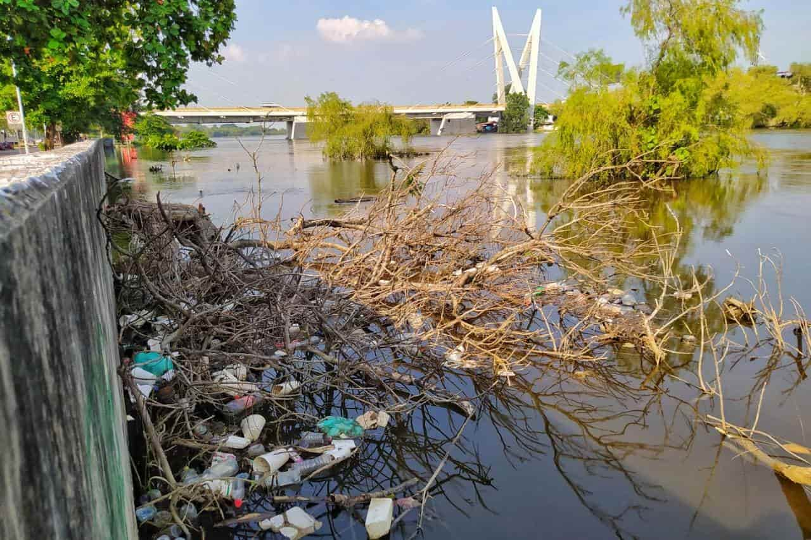

<!DOCTYPE html>
<html lang="es">
<head>
  <meta charset="UTF-8" />
  <meta name="viewport" content="width=device-width, initial-scale=1.0" />
  <title>Acerca | Río Grijalva 🌊 Conciencia Ambiental</title>

  <!-- Fuentes y estilos -->
  <link href="https://fonts.googleapis.com/css2?family=Poppins:wght@300;400;600;700&display=swap" rel="stylesheet">
  <link rel="stylesheet" href="styles.css">
  <link rel="stylesheet" href="acerca.css">
  <link href="https://unpkg.com/aos@2.3.1/dist/aos.css" rel="stylesheet">

  <!-- Favicon -->
  <link rel="icon" href="img/logo.jpg" type="image/jpg">
</head>

<body>
  <!-- Contenido aquí -->
  
  <!-- Scripts al final para evitar bloqueos -->
  <script src="https://unpkg.com/aos@2.3.1/dist/aos.js"></script>
  <script src="https://cdn.jsdelivr.net/npm/chart.js"></script>
  <script src="script.js"></script>
</body>
</html>

<body>
  <!-- ===== HEADER ===== -->
  <header class="header">
    <nav class="navbar">
      <div class="logo">
        
        <span>Río Grijalva</span>
      </div>
      <ul class="nav-links">
        <li><a href="index.html">Inicio</a></li>
        <li><a href="acerca.html" class="active">Acerca</a></li>
        <li><a href="metales.html">Metales</a></li>
        <li><a href="consecuencias.html">Consecuencias</a></li>
        <li><a href="soluciones.html">Soluciones</a></li>
        <li><a href="juego.html">Jugar</a></li>
      </ul>
    </nav>
  </header>

  <!-- ===== HERO ACERCA ===== -->
  <section class="hero-acerca">
    <div class="hero-content" data-aos="fade-up">
      <h1>Sobre el Proyecto Río Grijalva 🌊</h1>
      <p>
        Este proyecto busca generar conciencia sobre la contaminación en el río Grijalva  
        (ver <a href="https://www.meganoticias.mx/tuxtla-gutierrez/noticia/estudio-revela-contaminacion-con-metales-pesados-en-el-grijalva/567396" target="_blank" rel="noopener">MeGaNoticias Tuxtla, “Estudio revela contaminación con metales pesados en el Grijalva”</a> 11 nov 2024)  
        y promover soluciones sostenibles que beneficien al medio ambiente y a las comunidades locales.
      </p>

      <div class="vision-mision">
        <div class="cuadro" data-aos="fade-right">
          <h3>Visión</h3>
          <p>Ser un referente en conciencia ambiental y protección de los ríos de Chiapas, promoviendo comunidades saludables y ecosistemas sostenibles.</p>
        </div>
        <div class="cuadro" data-aos="fade-left">
          <h3>Misión</h3>
          <p>Informar, educar y motivar acciones concretas para reducir la contaminación y restaurar la salud ecológica del Río Grijalva.</p>
        </div>
      </div>
    </div>
  </section>

  <main class="container">
    <!-- ===== QUÉ ESTÁ PASANDO ===== -->
    <section id="que-esta-pasando" data-aos="fade-up">
      <div class="contenido">
        <h2>¿Qué está pasando con el río?</h2>
        <p>
          El Río Grijalva enfrenta una <strong>crisis ambiental grave</strong>. Estudios han detectado la presencia de 
          <strong>metales pesados</strong> como <span>mercurio, arsénico, cadmio y plomo</span>, superando los límites de seguridad  
          (ver <a href="https://ultimatumchiapas.com.mx/2024/11/12/peligrosa-el-agua-del-grijalva/" target="_blank" rel="noopener">Ultimatum Chiapas, “Peligrosa el agua del Grijalva”</a> 12 nov 2024) .
        </p>
        <p>
          Estos contaminantes se filtran al ecosistema principalmente a través de descargas industriales, aguas residuales urbanas  
          y escorrentías agrícolas con agroquímicos.
        </p>
        <div class="icon-alert">☣️</div>
      </div>
      <div class="imagen-rio" data-aos="fade-left">
        
      </div>
    </section>

    <!-- ===== GRÁFICA DE METALES ===== -->
    <section id="graficas-metales" data-aos="fade-up">
      <h2>Concentración vs. Límite Seguro</h2>
      <div class="grafica-container">
        <canvas id="graficaMetales"></canvas>
      </div>
      <p class="nota-grafica">*Cada metal tiene una barra azul que indica límite seguro y una barra roja que indica concentración reportada.</p>
    </section>

    <!-- ===== TABS PROFUNDIDAD DEL PROBLEMA ===== -->
    <section id="mas-informacion" data-aos="fade-up">
      <h2>Conoce la Profundidad del Problema</h2>
      <div class="tab-buttons">
        <button class="tab-btn active" data-tab="fuentes">Fuentes de Contaminación</button>
        <button class="tab-btn" data-tab="salud">Impacto en la Salud</button>
        <button class="tab-btn" data-tab="local">Contexto Local</button>
      </div>
      <div class="tab-content active" id="fuentes">
        <h3>Principales Orígenes de Metales</h3>
        <ul>
          <li>🏭 Descargas industriales sin tratamiento.</li>
          <li>🚰 Aguas residuales urbanas.</li>
          <li>🌾 Agroquímicos y pesticidas agrícolas.</li>
          <li>⛰️ Residuos de minería ilegal y materiales de construcción.</li>
        </ul>
      </div>
      <div class="tab-content" id="salud">
        <h3>Riesgos Directos por Exposición</h3>
        <ul>
          <li>🧠 Mercurio: daños neurológicos graves.</li>
          <li>💀 Arsénico: alto riesgo de cáncer.</li>
          <li>🦴 Cadmio: problemas renales y óseos.</li>
          <li>👶 Plomo: neurotoxicidad infantil.</li>
        </ul>
      </div>
      <div class="tab-content" id="local">
        <h3>Evidencia Científica en Tuxtla</h3>
        <p>
           Estudios indican que los niveles de metales en la región superan las guías de la Organización Mundial de la Salud (OMS) y normativa nacional, especialmente en zonas de riberas del río Grijalva (ver <a href="https://www.elheraldodechiapas.com.mx/local/metales-toxicos-en-rios-de-chiapas-18478680" target="_blank" rel="noopener">El Heraldo de Chiapas, “Metales tóxicos en ríos de Chiapas”</a> 10 nov 2024).
        </p>
   
      </div>
    </section>

    <!-- ===== ACORDEÓN PREGUNTAS FRECUENTES ===== -->
    <section id="datos-relevantes" data-aos="fade-up">
      <h2>Preguntas Frecuentes y Datos Clave</h2>
      <div class="accordion">

        <!-- Tarjeta 1 -->
        <div class="accordion-item">
          <button class="accordion-header" data-target="#body1">
            ⚠️ Metales específicos encontrados en el Río Grijalva 
            <span class="accordion-icon">+</span>
          </button>
          <div class="accordion-body" id="body1">
            <ul style="list-style: disc inside; margin-left: 0; padding-left: 1rem;">
              <li><strong>Mercurio (Hg):</strong> Afecta el sistema nervioso, especialmente en niños y fetos.</li>
              <li><strong>Plomo (Pb):</strong> Provoca retraso en el desarrollo, anemia y problemas renales.</li>
              <li><strong>Cadmio (Cd):</strong> Puede dañar riñones, huesos y pulmones.</li>
              <li><strong>Arsénico (As):</strong> Aumenta el riesgo de cáncer y provoca lesiones cutáneas.</li>
            </ul>
          </div>
        </div>

        <!-- Tarjeta 2 -->
        <div class="accordion-item">
          <button class="accordion-header" data-target="#body2">
            📜 Normativa y límites legales 
            <span class="accordion-icon">+</span>
          </button>
          <div class="accordion-body" id="body2">
            <p>
              La <strong>NOM‑127‑SSA1‑2021</strong> establece los límites máximos de metales pesados en agua potable:
            </p>
            <ul style="list-style: disc inside; margin-left: 0; padding-left: 1rem;">
              <li><strong>Mercurio (Hg):</strong> ≤ 0.01 mg/L</li>
              <li><strong>Plomo (Pb):</strong> ≤ 0.03 mg/L</li>
              <li><strong>Cadmio (Cd):</strong> ≤ 0.005 mg/L</li>
              <li><strong>Arsénico (As):</strong> ≤ 0.01 mg/L</li>
            </ul>
            <p>Los niveles del río Grijalva superan estos límites, representando un riesgo directo para la salud humana y el ecosistema.</p>
          </div>
        </div>

        <!-- Tarjeta 3 -->
        <div class="accordion-item">
          <button class="accordion-header" data-target="#body3">
            🌱 Impacto social y ambiental 
            <span class="accordion-icon">+</span>
          </button>
          <div class="accordion-body" id="body3">
            <ul style="list-style: disc inside; margin-left: 0; padding-left: 1rem;">
              <li><strong>Comunidades ribereñas:</strong> Consumo de agua y alimentos contaminados.</li>
              <li><strong>Biodiversidad:</strong> Pérdida de especies acuáticas y desequilibrio ambiental.</li>
              <li><strong>Salud:</strong> Enfermedades renales, anemia y alteraciones neurológicas.</li>
              <li><strong>Economía local:</strong> Impacto en pesca y agricultura.</li>
            </ul>
          </div>
        </div>

      </div>
    </section>
  </main>

  <!-- ===== FOOTER ===== -->
  <footer>
    <div class="footer-bottom">
      <p>&copy; 2025 Proyecto Ambiental — <strong>Río Grijalva</strong> | Desarrollado por <strong>Equipo 2 UNACH</strong></p>
    </div>
  </footer>

  <!-- ===== SCRIPTS ===== -->
  <script src="acerca.js"></script>
  <script src="https://unpkg.com/aos@2.3.1/dist/aos.js"></script>
  <script>
    AOS.init({ duration: 1200, once: true });
  </script>
</body>
</html>
